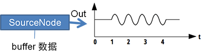
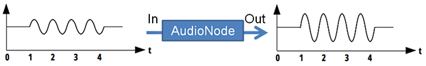
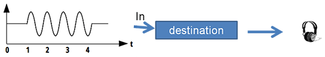
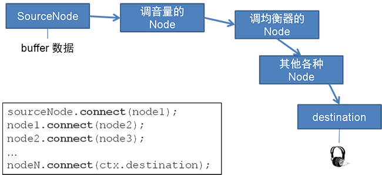

2-2. AudioNode
概念：SourceNode
SourceNode 是记录和输出波形声音的对象。
要使用 AudioContext 对象的 createBufferSource 方法创建，而不是 new。
var sourceNode = ctx.createBufferSource();
它是其中一种 AudioNode（见下文）。
概念：AudioNode
这是一种由 AudioContext 生成的基本对象，用于生成或者处理音频波形数据。
AudioContext 提供很多特定的 AudioNode 可供使用，例如均衡器、滤波器、振荡器……
AudioNode 大体可分3类。
第一种：作为【声音源头】的 AudioNode，用于存储或生成声音（例如上文的 SourceNode）：

第二种：作为【过滤器】的 AudioNode，会对输入（In）的声音进行处理之后再输出（Out）。
（有些 AudioNode 可以有多个输入（In），然后对它们做混音后再输出。）

第三种：【destination】 是特殊的 AudioNode，它收到声音之后会直接传到耳机或扬声器，让我们最终听到声音。

把 AudioNode 连接起来…
多个 AudioNode 连接起来，可得到最终的声音：
sourceNode.connect(node1);
node1.connect(node2);
node2.connect(node3);
// ......
nodeN.connect(ctx.destination);

注意
一般来说，作为【声音源头】的 AudioNode （例如 SourceNode，以及将于进阶篇提及的 OscillatorNode），它的声音播放完毕后，它自身会立即销毁。
若需要再次播放，必须重新创建它。
例如，对于 SourceNode，每当重新播放同一个音频，每次都需要重新执行以下代码：
function playBuffer(buffer) {
var sourceNode = ctx.createBufferSource();
sourceNode.buffer = buffer;
sourceNode.connect(ctx.destination);
sourceNode.start(0);
}